The human skull is a complex structure that plays a crucial role in protecting the brain and supporting various sensory and motor functions. It consists of several bones that together form a firm framework. Let's explore the key components of the skull's anatomy.
Cranium: The cranium, often referred to as the braincase, is the upper part of the skull that encases and protects the brain. It is composed of several bones that fuse together by sutures during development. These bones include the frontal bone at the front, the parietal bones on the sides, the temporal bones on the lower sides, and the occipital bone at the back.
Facial Bones: The facial bones provide structure and shape to the face, as well as support for important sensory organs like the eyes, nose, and mouth. Key facial bones include the maxilla (upper jaw), mandible (lower jaw), nasal bones (forming the bridge of the nose), zygomatic bones (cheekbones), and the orbitals that encircle the eye sockets.
Sutures: Sutures are fibrous joints that connect the cranial bones together. In babies and young children, cranial sutures allow for the growth and expansion of the skull as the brain and head continue to develop. As we grow older, the cranial sutures help protect the brain by providing a strong and stable structure. They prevent the skull bones from shifting and protect the delicate brain tissue. There are several major cranial sutures, including the sagittal suture (running along the top of the skull), the coronal suture (at the front), the lambdoid suture (at the back), and the squamous sutures (on the sides). These sutures are typically fused in adults but are more flexible and open in infants and children to accommodate brain growth.
Foramina: Foramina are openings in the skull that allow for the passage of nerves, blood vessels, and other structures. The most well-known foramen is the foramen magnum, located in the occipital bone, through which the spinal cord connects to the brain.
Sinuses: Cranial sinuses, also known as paranasal sinuses, are a system of air-filled cavities located within the bones of the skull and facial bones. These sinuses are covered with a mucous membrane and are connected to the nasal passages. There are several pairs of cranial sinuses, and they serve several important functions: lightening the skull, resonance and sound production, moistening and filtering air, thermal insulation The major pairs of cranial sinuses include the frontal sinuses (located in the forehead area), ethmoid sinuses (located between the eyes), sphenoid sinuses (located behind the nose), and maxillary sinuses (located in the cheekbones).
Cranial Fossae: The cranial fossae are depressions on the base of the skull that accommodate different parts of the brain. There are three fossae: the anterior cranial fossa, the middle cranial fossa, and the posterior cranial fossa. These fossae provide support and protection to the brain's various regions.
Temporomandibular Joint (TMJ): The TMJ is the joint that connects the mandible (lower jaw) to the temporal bone of the skull. It allows for movements like chewing and speaking and is one of the most complex joints in the body.
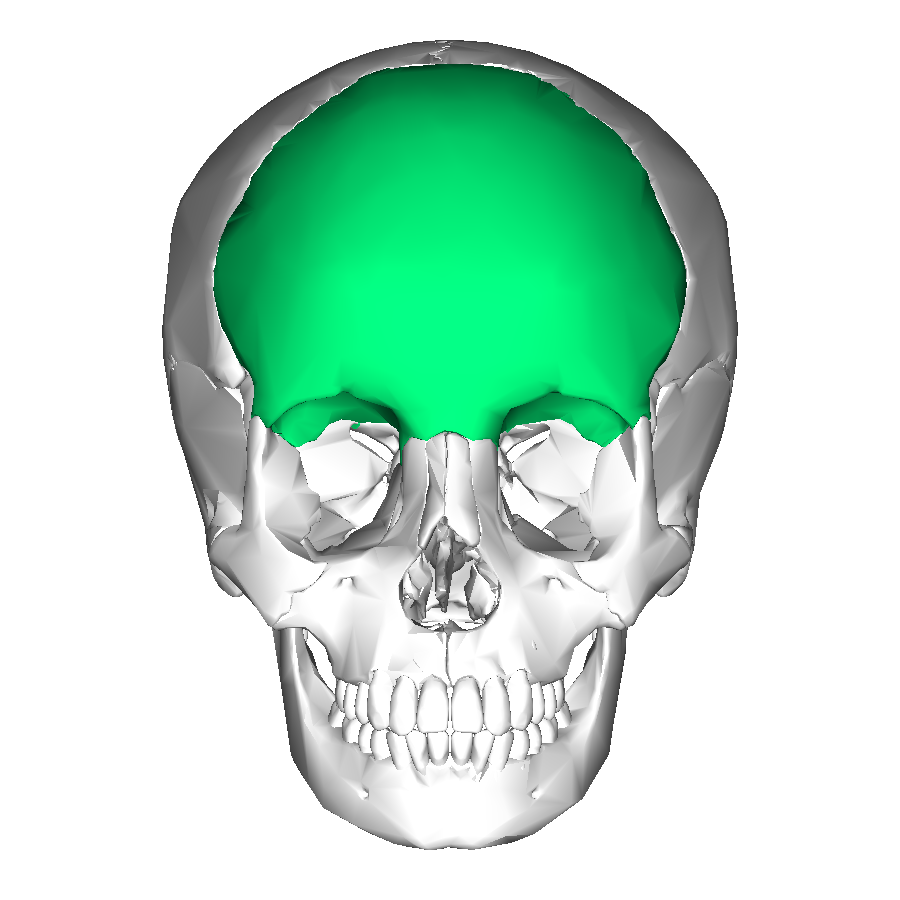 This is a large, singular bone that forms the anterior part of the skull. It consists of a horizontal plate, which forms the forehead and the upper part of the orbits (eye sockets), as well as the upper part of the nasal cavity. On the inner side of the frontal bone, there is a superior sagittal sulcus, which serves as the attachment site for the dura mater.
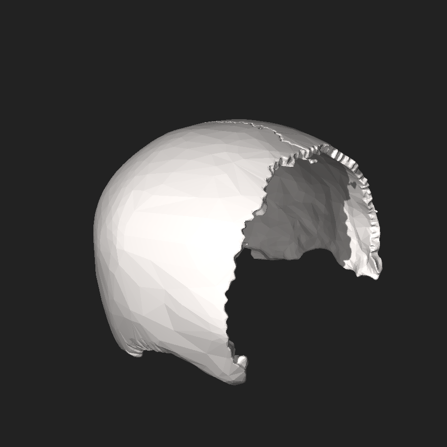 These two bones form the majority of the skull's roof and sides. They are positioned on the top and sides of the skull, meeting at the sagittal suture along the midline. The parietal bones provide protection for the top and sides of the brain. Each parietal bone has four borders: frontal, temporal, occipital, and sphenoid.
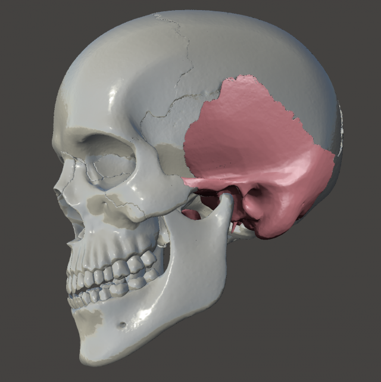 Each temporal bone is located on the lateral aspect of the skull, inferior to the parietal bones. They consist of several parts, including the squamous, mastoid, and petrous parts. The temporal bones house important structures such as the middle and inner ear, including the cochlea and semicircular canals. Additionally, they contribute to the formation of the lower part of the skull and the jaw joint (temporomandibular joint). The temporal bone also contains the mastoid process, which serves as an attachment site for several neck muscles.
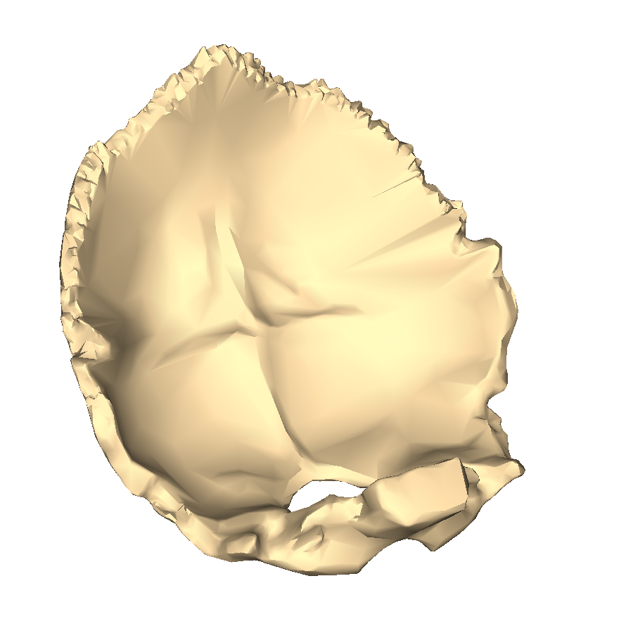 The occipital bone forms the back and base of the skull. It features a large opening known as the foramen magnum, through which the spinal cord passes. The occipital bone articulates with the first cervical vertebra (atlas) and provides protection for the back of the brain. It also has protrusions called occipital condyles, which articulate with the first cervical vertebra, allowing for head movement.
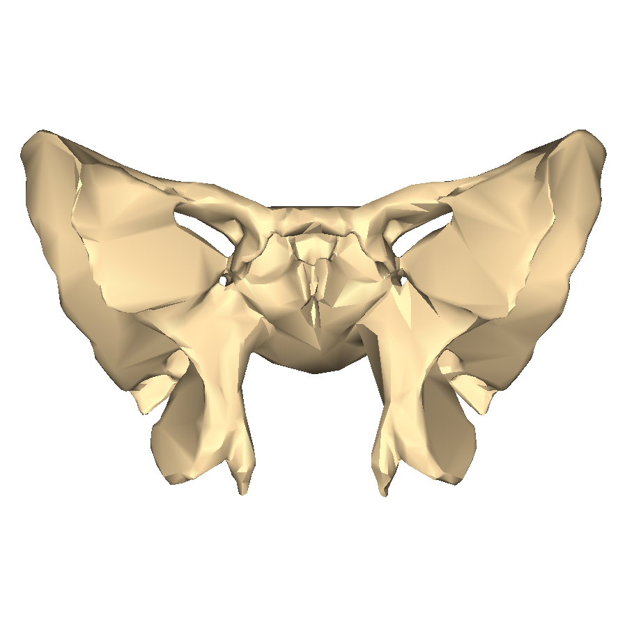 The sphenoid bone is a complex, butterfly-shaped bone situated in the middle of the skull, near the base. It consists of a body and two greater wings, two lesser wings, and two pterygoid processes. The sphenoid bone contributes to the formation of the floor of the skull, orbits (eye sockets), and sides of the skull. It also houses the pituitary gland within a depression called the sella turcica.
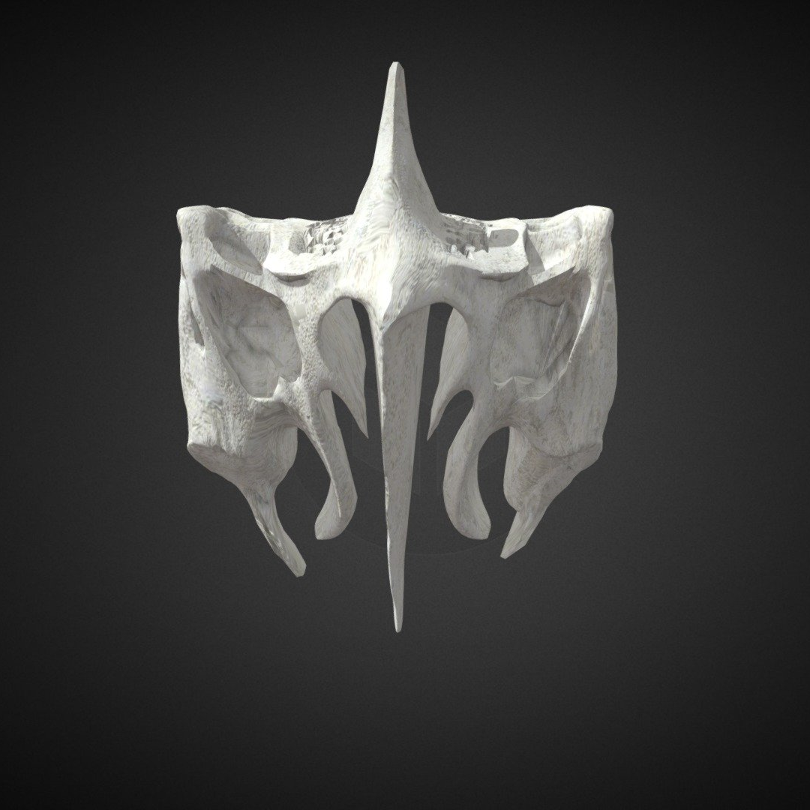 The ethmoid bone is located in front of the sphenoid bone and consists of a cribriform plate, perpendicular plate, and two lateral masses. It forms part of the medial wall of the orbits and the roof of the nasal cavity. The ethmoid bone contains numerous perforations called ethmoidal sinuses and the cribriform foramina, through which olfactory nerves pass.
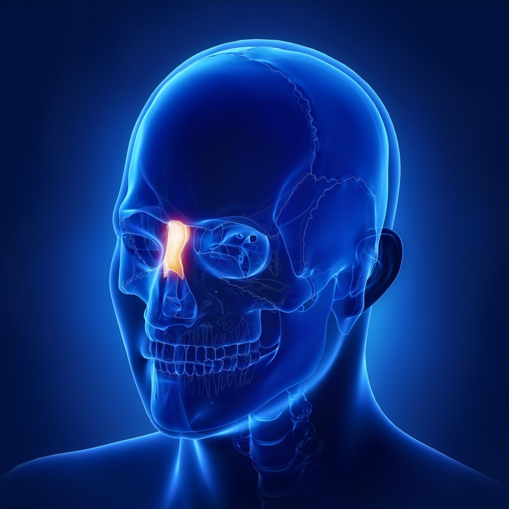 These are two small, rectangular-shaped bones that form the bridge of the nose. They articulate with the frontal bone superiorly and the maxillary bones laterally, contributing to the shape and structure of the nose.
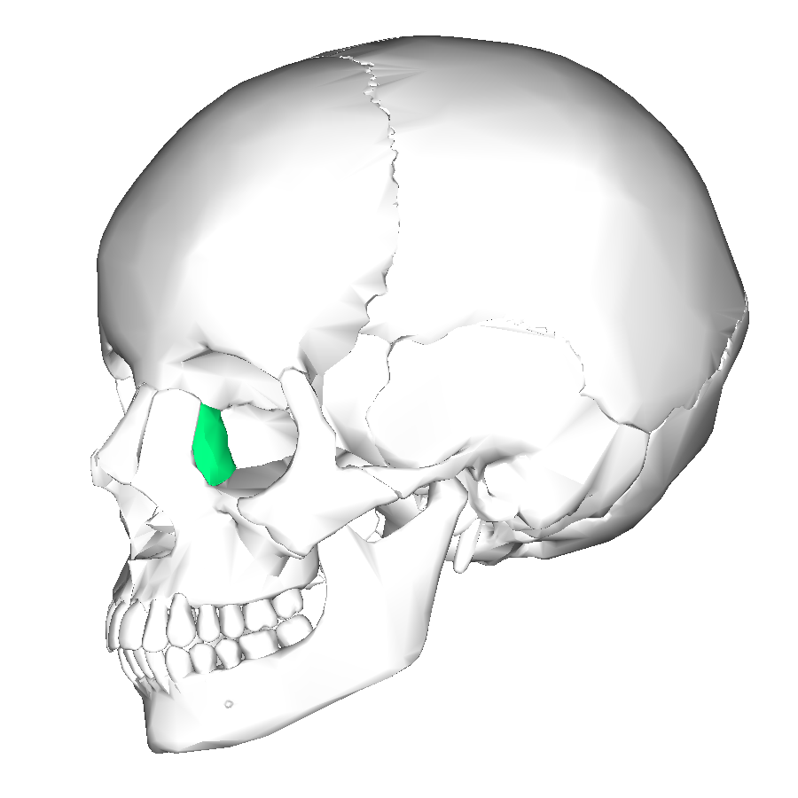 The lacrimal bones are thin, paired bones located in the medial wall of the orbits. They contribute to the formation of the lacrimal fossa, which houses the lacrimal sac. These bones also help form part of the nasal cavity sidewalls.
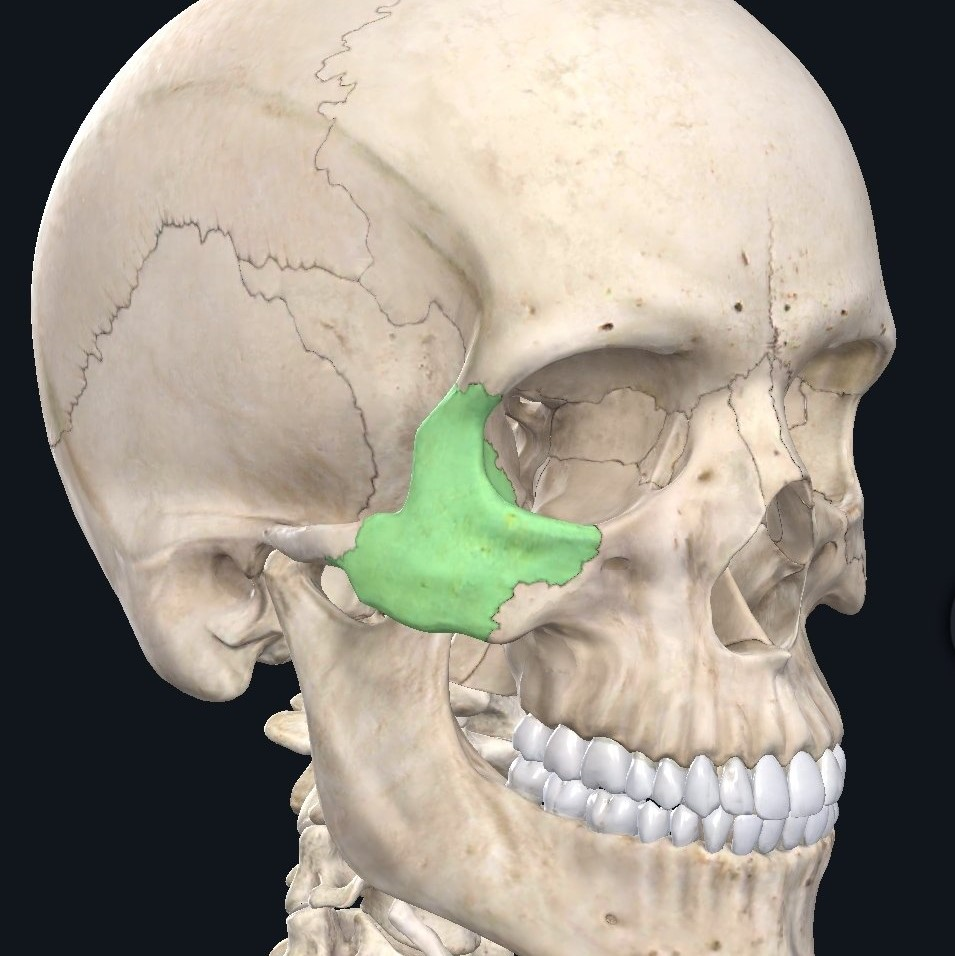 Also known as the cheekbones, these are two small, paired bones that form the prominence of the cheeks and the lateral walls of the orbits. They articulate with the frontal, temporal, and maxillary bones.
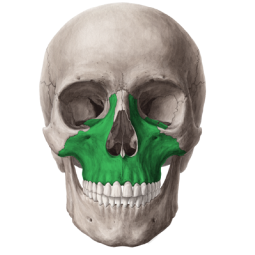 The maxilla bones are the largest facial bones. They form the upper jaw and contain the upper teeth. The maxilla bones articulate with all other facial bones except the mandible. They contribute to the formation of the orbits, nasal cavity, and hard palate.
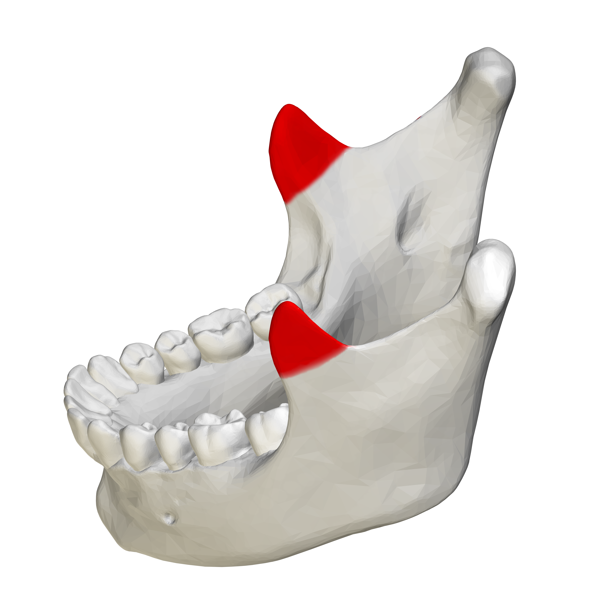 The mandible, or lower jawbone, is the only movable bone of the skull. It consists of a horizontal body and two vertical rami. The mandible supports the lower teeth and provides attachment for muscles involved in chewing and speech. It articulates with the temporal bones at the temporomandibular joints.